Cats by Post · the morning post
Town Depot
The complete room, from the first delivery to the seven-by-five finale. Warm paper architecture, a working postal round and a town beyond the windows.
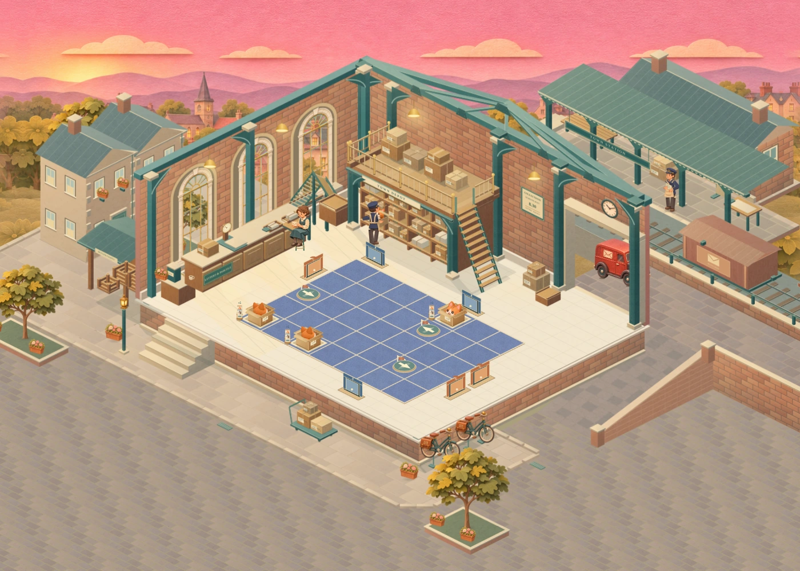
The accepted hall and street composition, with the full 7 × 5 sorting floor.
A complete morning round
Watch the courier collect, weigh and dispatch the post, exchange the bag at the van and take a tea break. These recordings show the playable room itself.
This final pass keeps the accepted room artwork. It removes the van’s visible cut at the old scenery edge and fixes the camera jump when a phone rotates during chapter entry. Delivery data, gameplay, original timing and saves remain unchanged.
Every board size
The goods yard
The van now continues along a supported road as a complete vehicle. Loading happens at the same place and time. Its longer visual route travels faster within the existing departure and return windows.
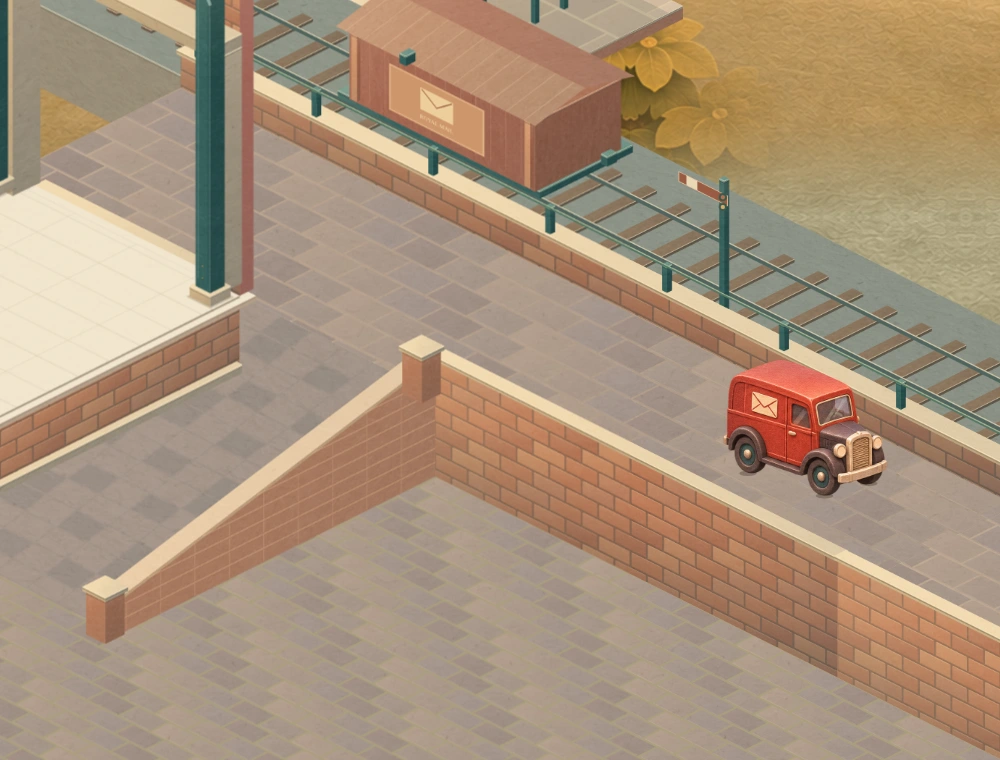
Continuous paving and contact beneath the complete van.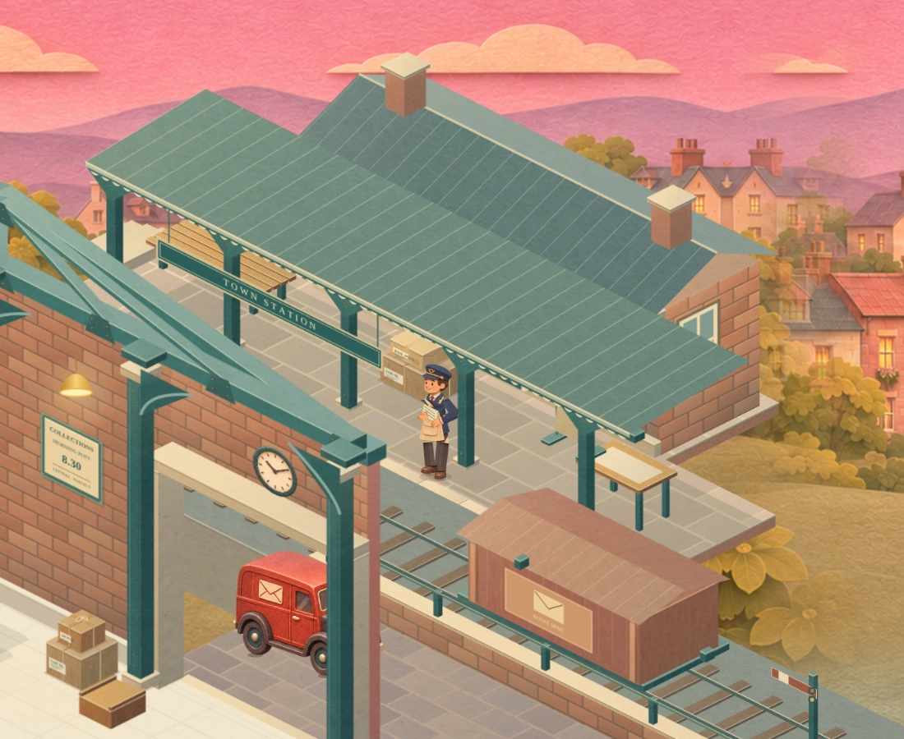
A working station beside the sorting hall.Close views and station activity
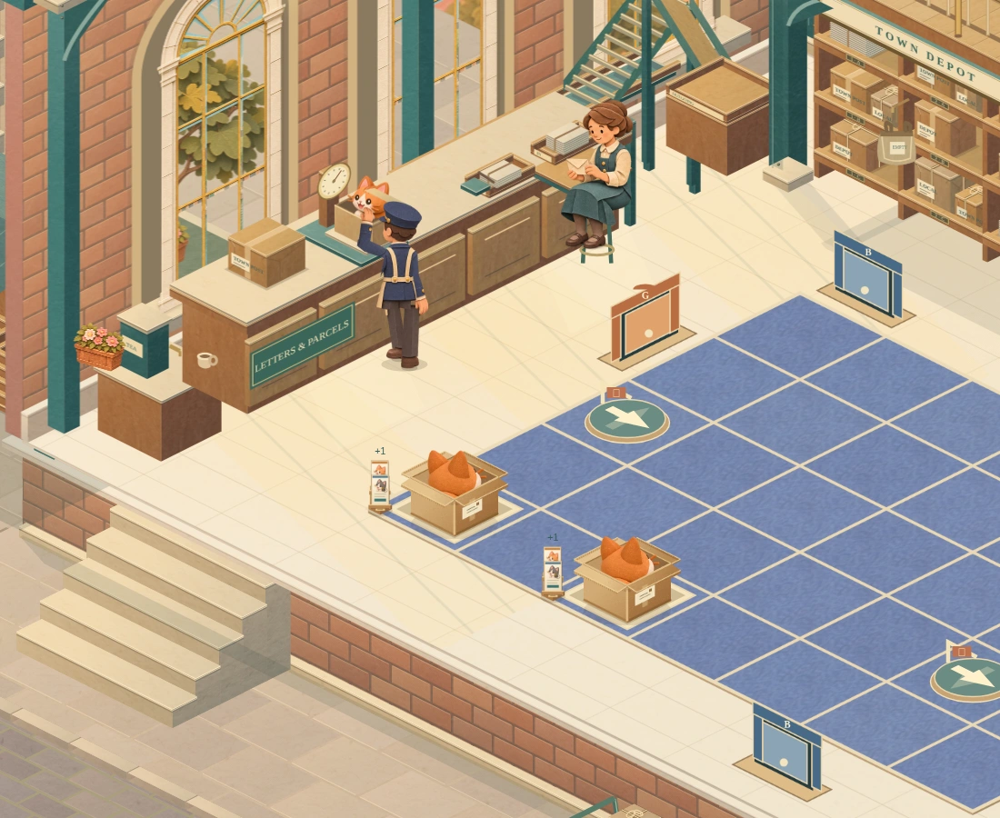
Counter, scale and seated clerk.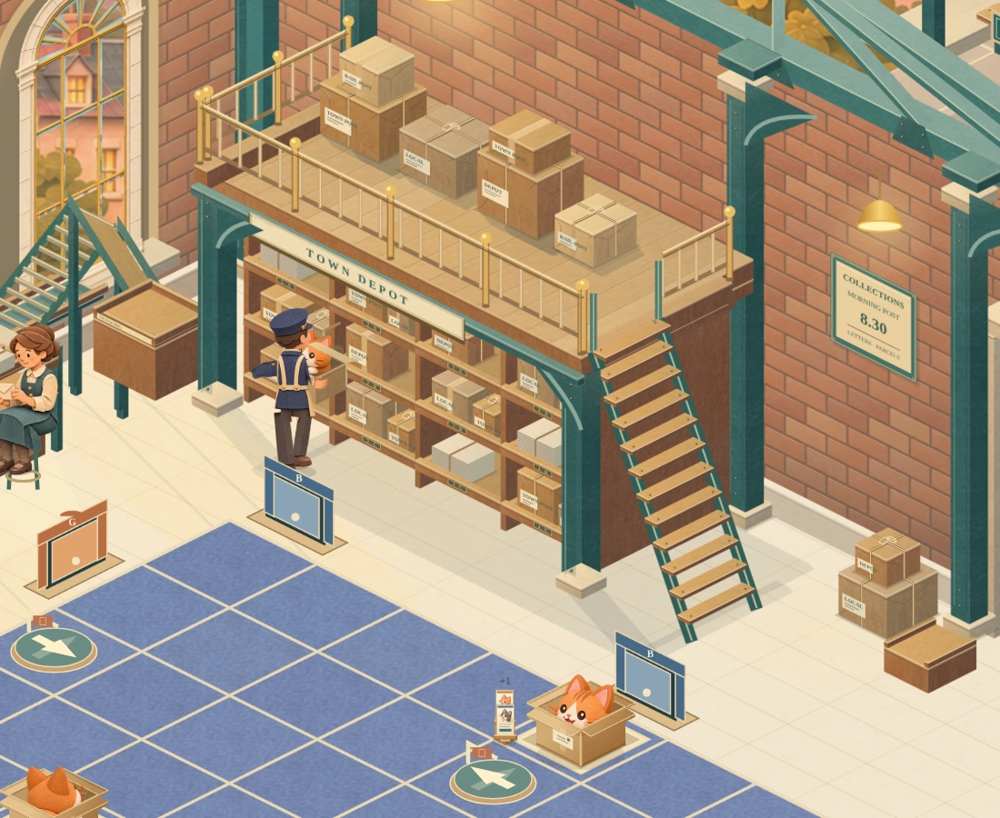
Supported loft, clear rails and connected access.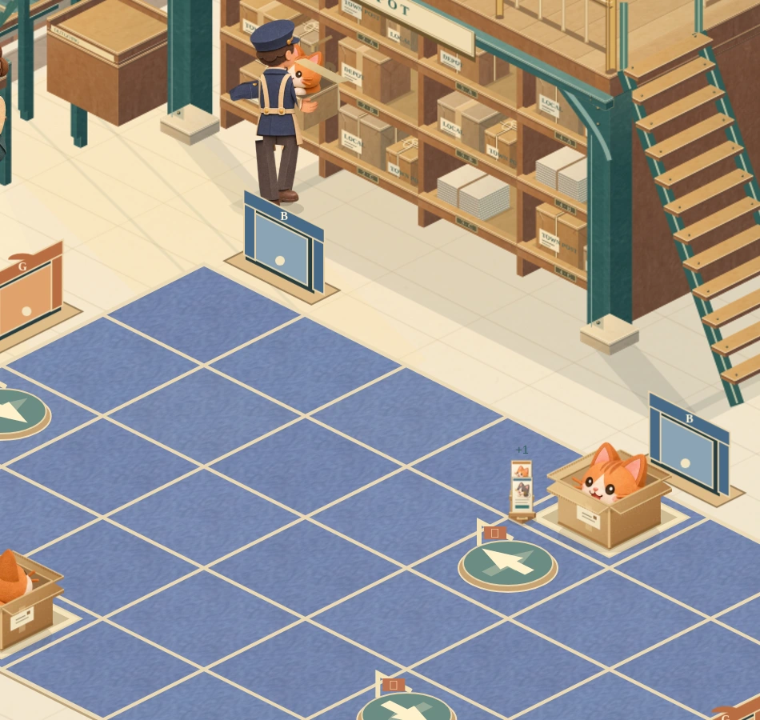
Courier and parcel contact.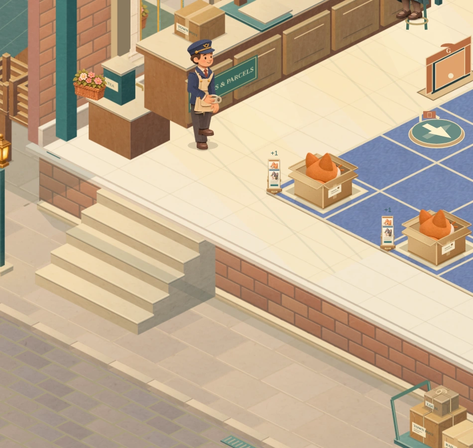
A pause in the existing postal schedule.All four boards on a phone
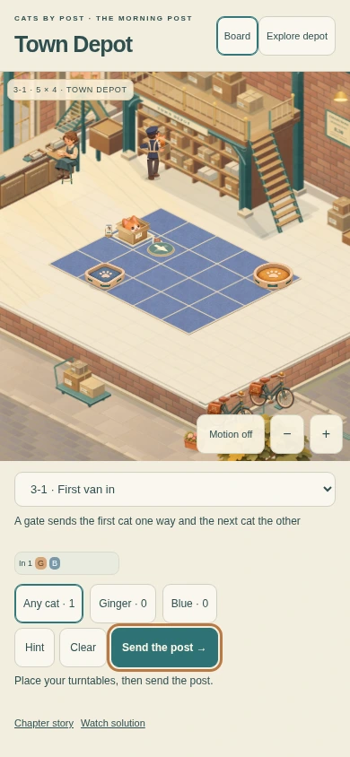
3-1 · 5 × 4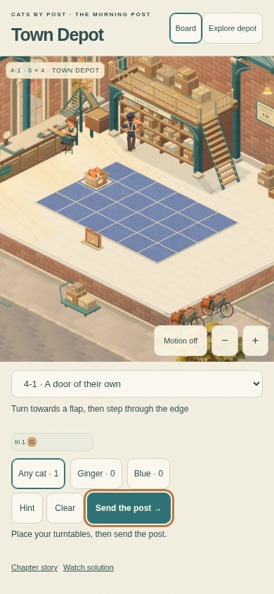
4-1 · 6 × 4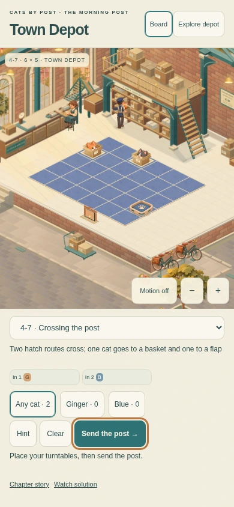
4-7 · 6 × 5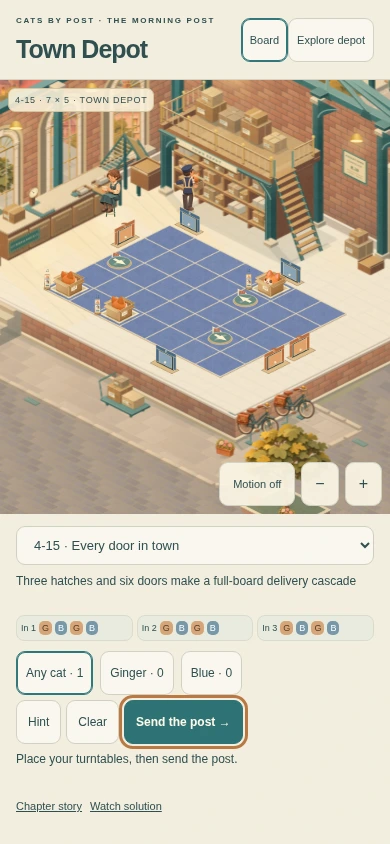
4-15 · 7 × 5Chapters and floor expansions
The original teaching sequence, both floor expansions and the final satchel departure remain part of the study.
Phone and wider host views
Explore uses the available height. The full game supplies its own interface and viewport. Phone screenshots below are Chromium emulation.
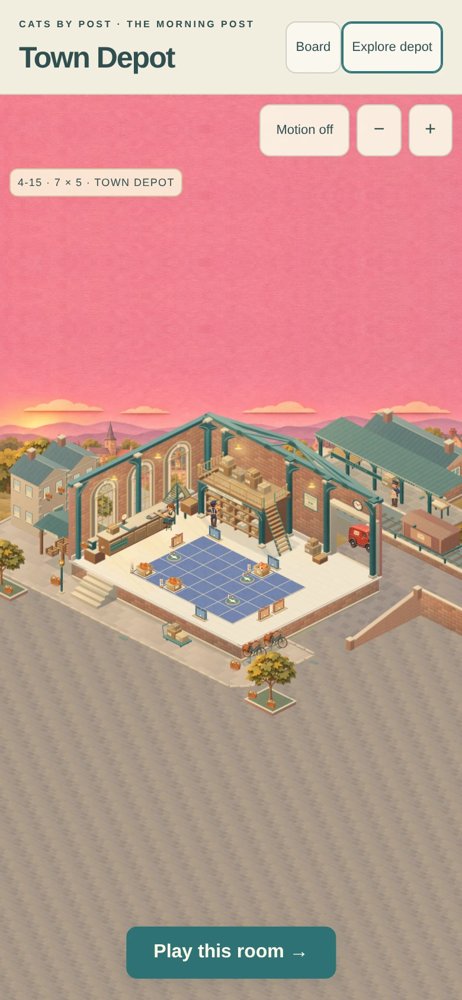
390 × 844 · Explore390 × 1100 · full-height host, same room scale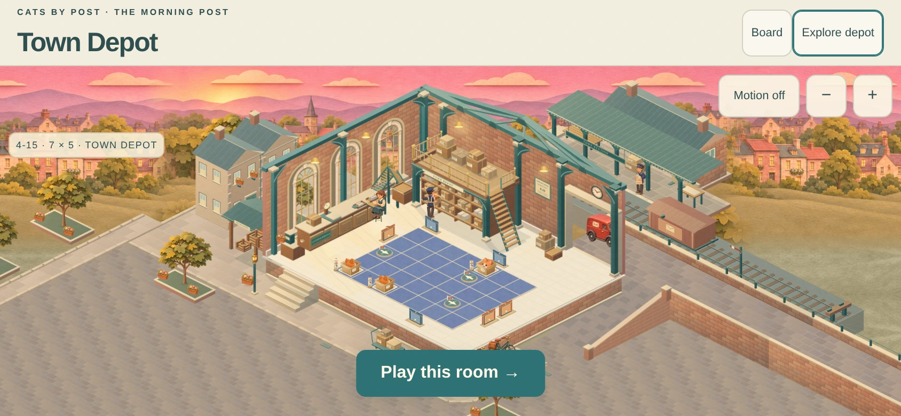
Landscape Explore.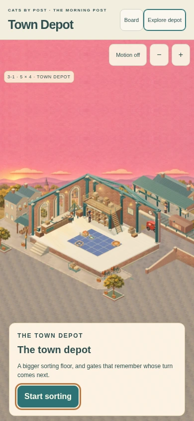
Chapter 3Chapter 4Review evidence and integration handover
All 1,723 broad tests and 68 focused Depot tests pass. The independent review found no Critical, Important or Minor issue. All 25 original deliveries and 721 cell picks pass. Four board images and accepted hall layers remain exact. The review also covers phone/wide chapter layouts, protected saves, reduced motion, stable caches and sixteen chapter-entry resize cases.
Handover · Integration contract · Independent review · Tests · Software timing · Preservation · Asset provenance · Packet hashes
Physical iPhone/Safari performance remains unverified. The study is silent and uses an isolated review save. Extreme free pan can reveal the van’s distant holding position. Production UI, audio and final integration stay with the integration owner.
Runtime 5f0d1e9c2f0094d33b5a6830ae13dbcfa21c8b7814b7ab7cb1a981a918b44240